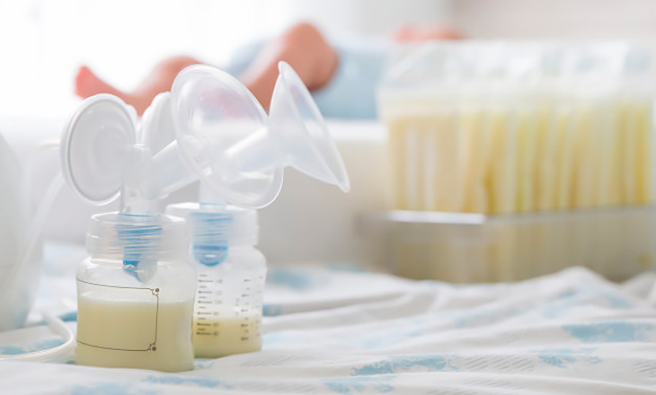

Міфи про донорське грудне молоко

Найпоширеніші міфи про донорське грудне молоко:
1️⃣ Грудне молоко швидко псується.
✔️ Залежно від способу зберігання воно залишається свіжим від 6 годин до року і навіть довше. Все залежить від умов зберігання.
2️⃣ Грудне молоко від кількох мам не можна змішувати.
✔️ Можна. Саме це і роблять в офіційних банках молока. Чи ви думали, що одна мама годує свою дитину і ще зціджує для повноцінного годування 4 дітей?
3️⃣ Грудне молоко чужої жінки потрібно стерилізувати. Але в чому сенс, якщо при кип'ятінні корисні речовини руйнуються?
✔️ Грудне молоко не стерильне — воно містить бактерії, які грають надважливу роль і є необхідними для організму малюка.
А що таке замінник грудного молока? Суміш — це порошок з молока тварин + різні компоненти, отримані завдяки хімічної промисловості. Точний склад суміші жоден виробник не відкриває 🙄.
Факт: за своїм складом штучні суміші навіть близько не стоять поруч з жіночим молоком. Це сурогати, що засвоюються дитячим організмом набагато гірше, ніж людське молоко.
🚫 Кип'ятити жіноче молоко не потрібно, достатньо його пропастеризувати в домашніх умовах. Після пастеризації воно зберігає більшість корисних поживних речовин. Можете бути спокійними: в молоці будь-якої жінки ніколи не буде інородних речовин, що не є придатними для харчування малюків.
☝️Якщо ви вирішите скористатись методом миттєвого нагріву (при якому знищуються ВІЛ та деякі патогенні бактерії) або навіть прокип'ятити жіноче молоко, воно не перетвориться на суміш. А суміш — це що?.. Якщо що, вище можна почитати ще раз
Ми створили групу для мам-годувальниць, які готові поділитися своїм грудним молоком, або потребують його для догодовування або вигодовування свого малюка.
«Молочний затишок» не займається продажем молока, а підтримує його безоплатну передачу, в обмін на подяку.
Ми будемо вдячні, якщо ви поділитеся інформацією про наш чат підтримки зі знайомими мамами.